요구사항을 LED 기반 제어 규칙으로 바꾸기
발표자료에서 정리한 요구사항은 최소 3층 이상의 엘리베이터, 현재 층을 나타내는 RED LED, 층 사이 이동을 나타내는 YELLOW LED, 층별 호출 버튼과 호출 상태를 나타내는 GREEN LED였습니다. 구현에서는 4층 구조를 선택했습니다.
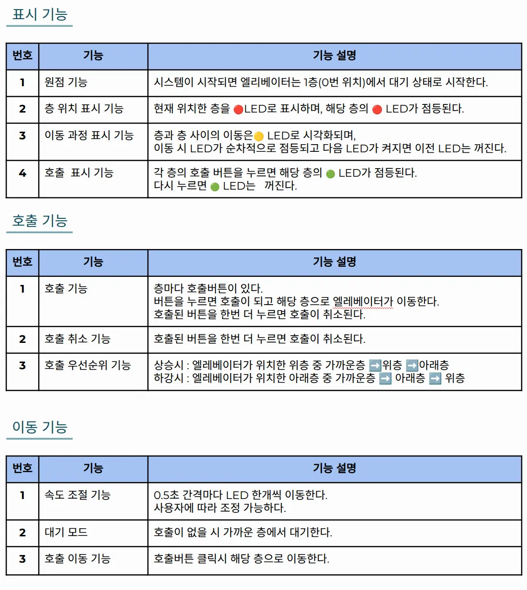
실제 승강기 모터 대신 LED 한 칸을 위치 단위로 사용했습니다. 한 층은 RED → YELLOW → YELLOW의 세 위치로 구성되며, nowFloor를 0부터 9까지 이동시켜 층과 층 사이의 진행 과정까지 표현했습니다.
초안 — 호출 순서를 큐에 저장하기
초기에는 버튼을 누른 순서대로 층 번호를 큐에 저장하고, 먼저 들어온 호출부터 처리하려 했습니다.
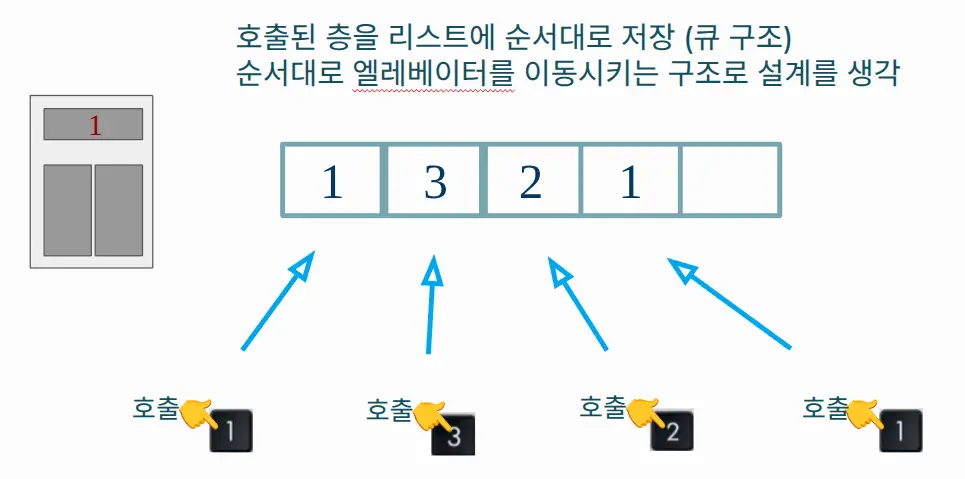
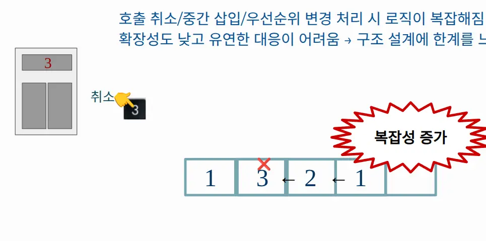
단순 호출에는 적합했지만 다음 상황에서 큐를 계속 수정해야 했습니다.
- 이미 등록한 호출을 다시 눌러 취소하는 경우
- 1층에서 4층으로 이동하던 중 2층 호출이 추가되는 경우
- 현재 진행 방향의 가까운 요청을 먼저 처리해야 하는 경우
- 목적층 도착 후 반대 방향의 남은 호출을 이어서 처리하는 경우
호출 이벤트의 순서보다 현재 남아 있는 호출과 진행 방향이 다음 목적층을 결정해야 한다고 판단했습니다.
개선 — 호출 상태와 진행 방향으로 목적층 다시 계산하기
큐 대신 floorList[4]에 각 층의 호출 여부만 저장했습니다. 이동 방향은 upMode, 현재 LED 위치는 nowFloor, 선택된 목표는 wantFloor로 관리하고, 메인 루프가 실행될 때마다 남아 있는 호출에서 다음 목적층을 다시 계산합니다.
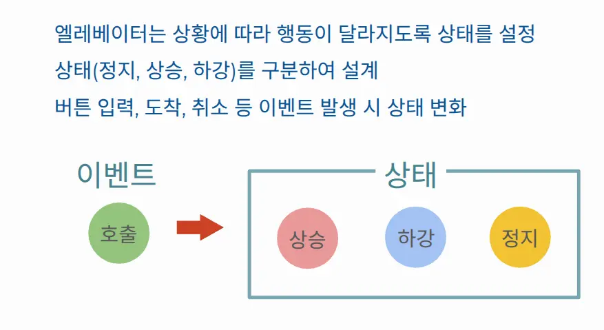
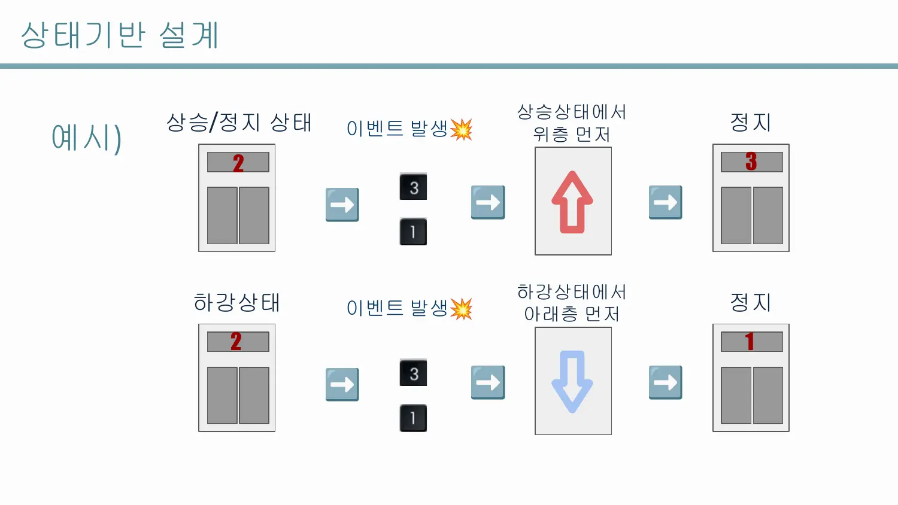
발표자료에서는 정지·상승·하강의 세 상태로 설명했지만, 실제 코드는 명시적인 FSM enum을 사용하지 않습니다. upMode가 마지막 이동 방향을 나타내고, wantFloor == nowFloor인 경우가 정지 동작에 해당합니다. 따라서 이 구현은 명시적 3-State FSM보다 방향 상태를 이용한 스케줄링으로 설명하는 것이 정확합니다.
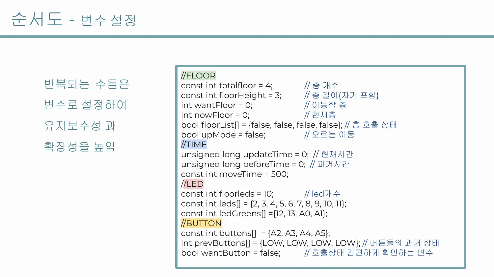
Call Toggle
Active Calls
Target Floor
Move One LED
버튼 상승 엣지로 호출 등록과 취소 구분하기
버튼을 누르고 있는 동안 호출 상태가 매 루프 반복해서 바뀌지 않도록 이전 값과 현재 값을 비교했습니다. LOW → HIGH가 발생한 순간에만 floorSensing()을 호출합니다.
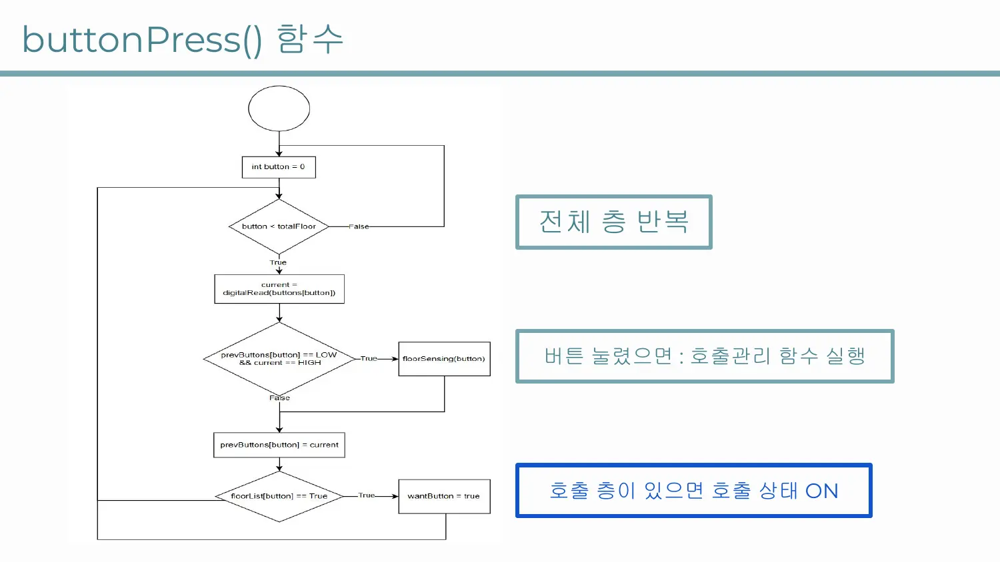
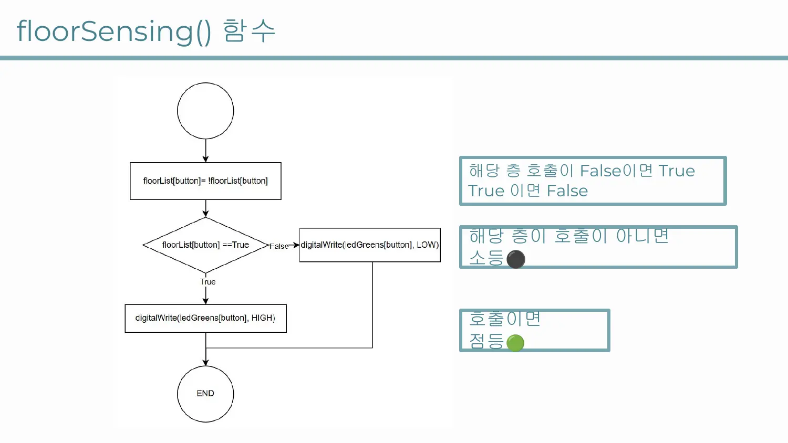
int current = digitalRead(buttons[button]);
if (prevButtons[button] == LOW && current == HIGH) {
floorSensing(button);
}
prevButtons[button] = current;
floorSensing()은 해당 층의 floorList를 반전시키고 GREEN LED를 같은 상태로 갱신합니다. 첫 번째 클릭은 호출 등록, 같은 버튼의 다음 클릭은 호출 취소가 됩니다.
이 방식은 상승 엣지를 구분하지만 별도의 소프트웨어 Debounce 시간이나 하드웨어 필터는 없습니다. 메인 루프의 10 ms 지연만 존재하므로 실제 기계식 버튼에서는 바운스로 인한 중복 토글 가능성이 남아 있습니다.
진행 방향에서 가까운 호출부터 탐색하기
상승 중에는 scanTop()이 현재 위치보다 위에 있는 호출을 가까운 층부터 탐색합니다. 위쪽에 호출이 없으면 scanBottom()으로 반대 방향 요청을 찾습니다. 하강 중에는 아래쪽 호출을 먼저 탐색한 뒤 위쪽으로 전환합니다.
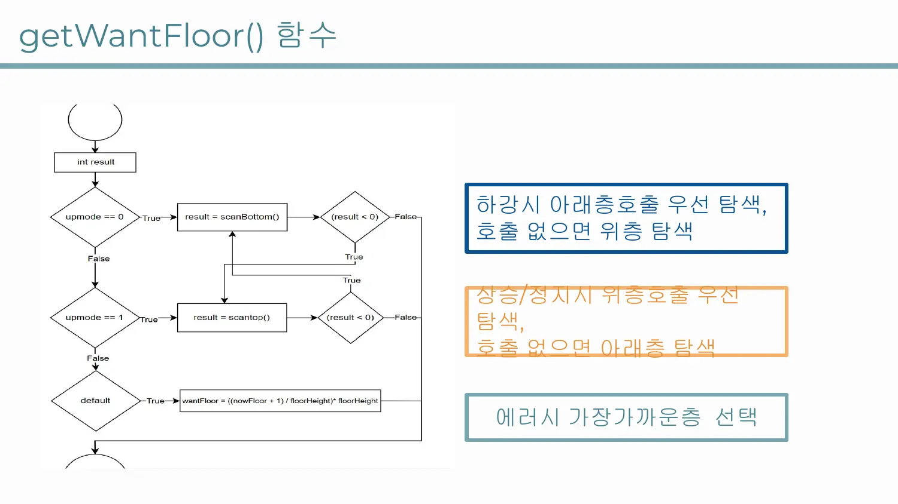
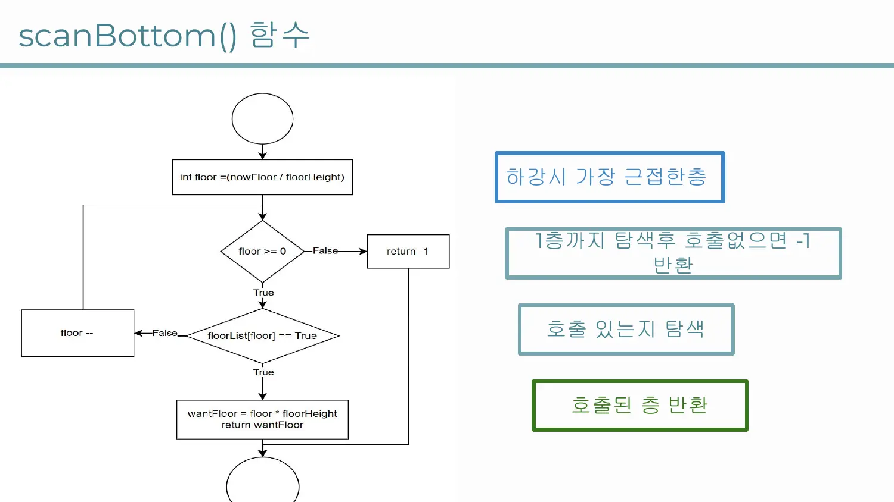
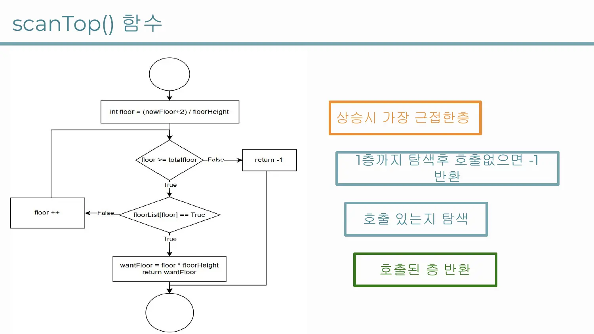
호출이 하나도 없으면 현재 LED 위치를 가장 가까운 실제 층 위치로 반올림해 대기합니다. 이 방식은 실제 엘리베이터 군 제어 알고리즘이 아니라, 하나의 승강기가 진행 방향의 요청을 우선 처리하는 단순 스케줄러입니다.
500 ms 이동 주기 사이에도 호출 확인하기
이동은 millis()의 시간 차가 500 ms를 넘었을 때만 moveElevator()를 호출해 LED를 한 칸 갱신합니다. 긴 delay(500)으로 이동 전체를 막지 않기 때문에 각 이동 Tick 사이에서 버튼 상태와 새 호출을 다시 확인할 수 있습니다.
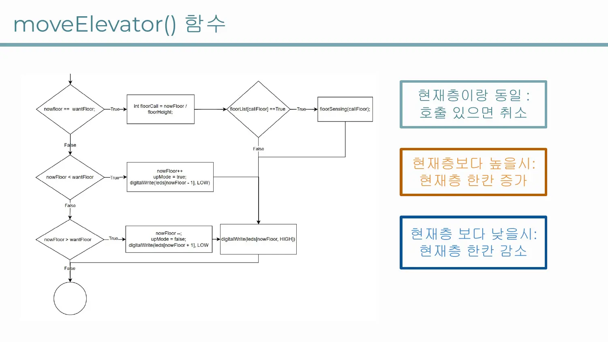
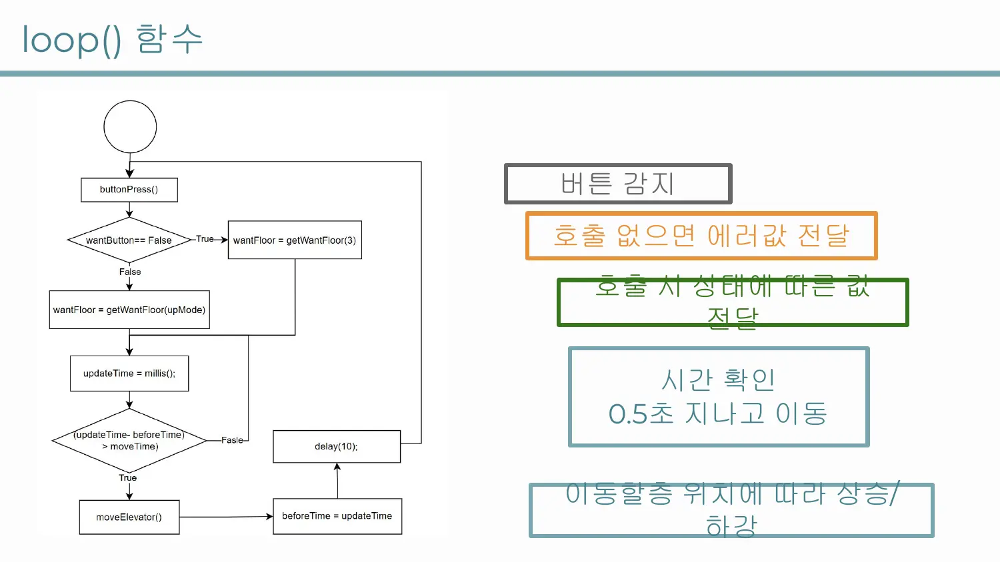
다만 메인 루프 마지막에 delay(10)이 남아 있으므로 완전히 Blocking 호출이 없는 구조는 아닙니다. 정확히는 긴 이동 대기를 제거하고 짧은 폴링 주기와 millis()를 결합한 Cooperative Timing입니다.
하드웨어 구성과 위치 표현
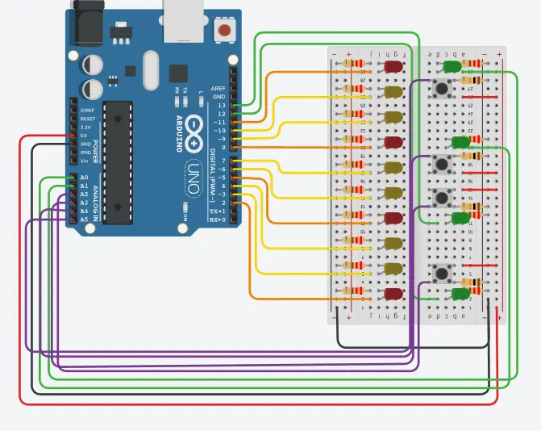
핀 번호는 leds, ledGreens, buttons 배열로 모았습니다. 층수를 확장하려면 핀 배열뿐 아니라 totalfloor, floorHeight, 호출 배열과 전체 위치 LED 수도 함께 변경해야 합니다. 속도는 moveTime을 변경해 조정할 수 있습니다.
입력·탐색·이동을 함수로 분리하기
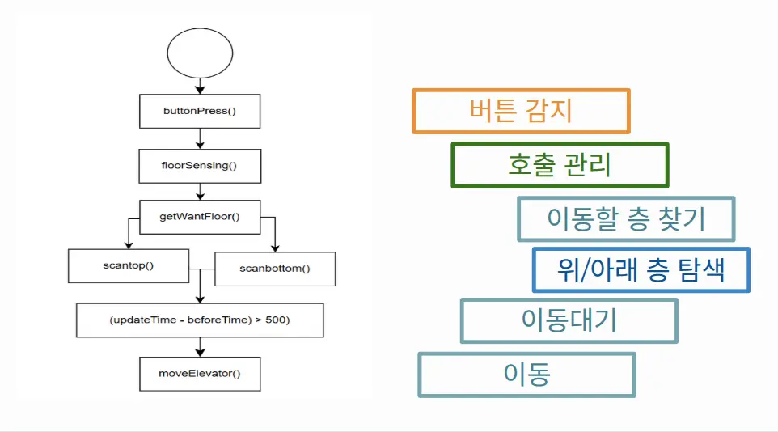
- buttonPress()
- 버튼 상승 엣지를 감지하고 호출 상태 변경을 요청합니다.
- floorSensing()
- 호출 상태를 토글하고 해당 층의 GREEN LED를 갱신합니다.
- scanTop() / scanBottom()
- 현재 위치와 방향을 기준으로 가까운 활성 호출을 찾습니다.
- getWantFloor()
- 진행 방향 우선순위와 반대 방향 전환을 적용해 목표 위치를 선택합니다.
- moveElevator()
- 현재 위치를 목표 방향으로 한 칸 이동시키고 LED 출력을 갱신합니다.
발표자료에 정의한 8개 테스트 시나리오
발표자료에는 다음 테스트 시나리오와 기대 결과를 정의했습니다.
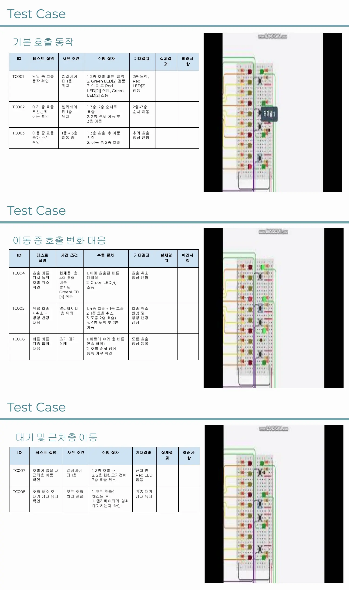